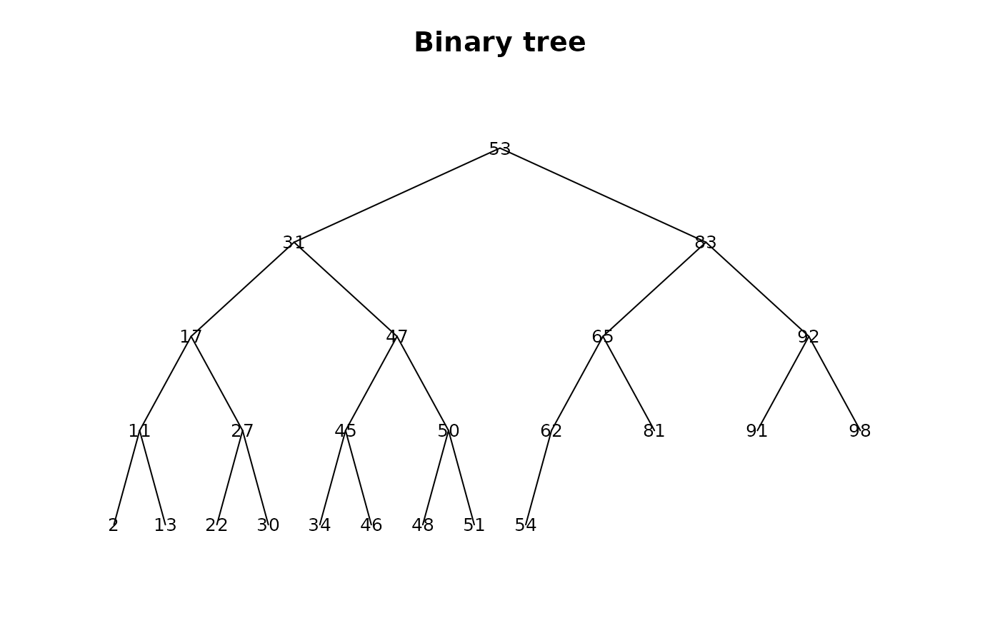
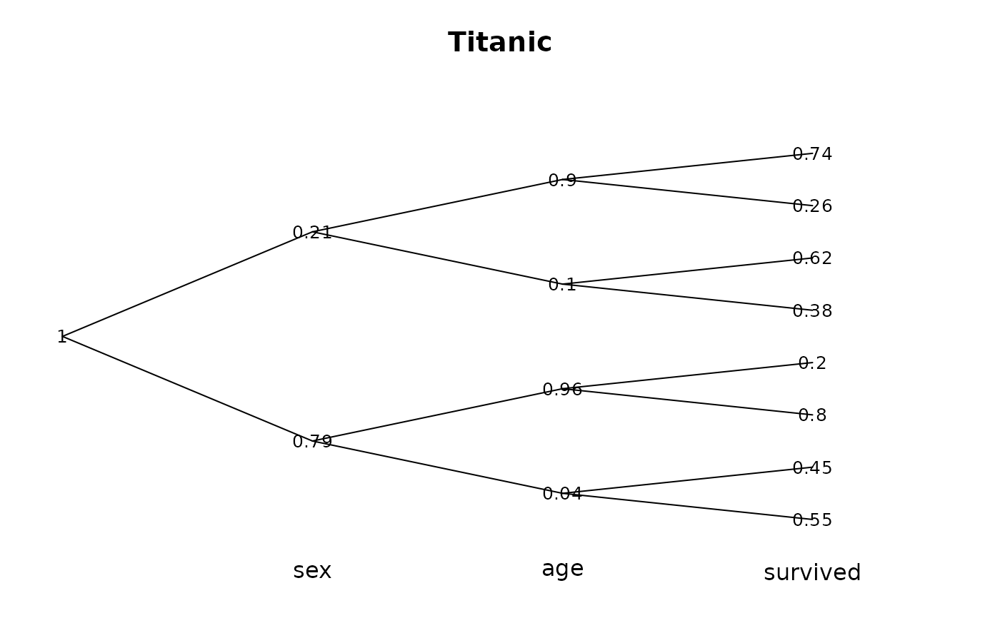

BinTree.RdCreate a binary tree of a given number of nodes n. Can be used to organize a sorted numeric vector as a binary tree.
BinTree(n)
PlotBinTree(x, main="Binary tree", horiz=FALSE, cex=1.0, col=1, ...)integer, size of the tree
numeric vector to be organized as binary tree.
main title of the plot.
logical, should the plot be oriented horizontally or vertically. The latter is default.
character extension factor for the labels.
color of the linesegments of the plot.
the dots are sent to Canvas.
If we index the nodes of the tree as 1 for the top, 2--3 for the next horizontal row, 4--7 for the next, ... then the parent-child traversal becomes particularly easy. The basic idea is that the rows of the tree start at indices 1, 2, 4, ....
BinTree(13) yields the vector
c(8, 4, 9, 2, 10, 5, 11, 1, 12, 6, 13, 3, 7) meaning that the smallest element
will be in position 8 of the tree, the next smallest in position 4, etc.
an integer vector of length n
BinTree(12)
#> [1] 8 4 9 2 10 5 11 1 12 6 3 7
x <- sort(sample(100, 24))
z <- PlotBinTree(x, cex=0.8)

# Plot example - Titanic data, for once from a somwhat different perspective
tab <- apply(Titanic, c(2,3,4), sum)
cprob <- c(1, prop.table(apply(tab, 1, sum))
, as.vector(aperm(prop.table(apply(tab, c(1,2), sum), 1), c(2, 1)))
, as.vector(aperm(prop.table(tab, c(1,2)), c(3,2,1)))
)
PlotBinTree(round(cprob[BinTree(length(cprob))],2), horiz=TRUE, cex=0.8,
main="Titanic")
text(c("sex","age","survived"), y=0, x=c(1,2,3)+1)
